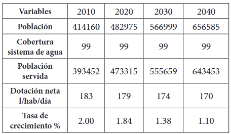
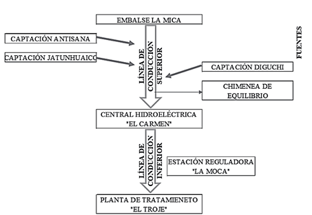

Sistema Hídrico Mica - Troje
El sistema “La Mica - Quito Sur” dota de agua a la zona sur de Quito, este sistema está ubicado en las provincias de Napo y Pichincha específicamente en el Distrito Metropolitano de Quito (DMQ), donde inicia con las fuentes de abastecimiento y termina en la planta de tratamiento El Troje respectivamente.
El sistema La Mica - Quito Sur dota de agua a la población asentada desde la Av. Morán Valverde hasta el límite cantonal sur de la ciudad. En el año 2010 el sistema abastecía a 393.452 habitantes y a partir de este dato se realiza la proyección de la población a servir hasta el año 204.
Proyección de la población servida
Los componentes que conforman el sistema La Mica - Quito Sur se los puede clasificar en tres grupos principales: captaciones o fuentes de abastecimiento, líneas de conducción y obras complementarias.
La línea de conducción superior empieza en el embalse y las captaciones hasta El Carmen donde se controla el caudal del sistema, la línea de conducción inferior comienza en el tanque de El Carmen hasta el tanque de El Troje y se regula el caudal desde La Moca.
Recorrido del Agua Mica - Sur
Desde la captación en el páramo hasta tu hogar, este es el viaje que realiza el agua para llegar segura y limpia a los hogares de Quito.
Volcán Antisana
El Volcán Antisana está ubicado en la provincia del Napo, dentro de la Reserva Ecológica Antisana. Se encuentra en la Cordillera de los Andes, a dos horas de Quito. Este enorme volcán tiene una altura de 5,758 metros y una base de 14 kilómetros, lo que lo convierte en el cuarto pico más alto del Ecuador. Se estima que tiene 800,000 años de antigüedad. Su actividad volcánica ha sido relativamente baja en comparación con otros volcanes ecuatorianos, pero su belleza natural y su entorno ecológico lo convierten en un lugar de gran interés para científicos y turistas.
Características geológicas
El Antisana es un estratovolcán compuesto, potencialmente activo, cubierto de glaciares. Este volcán se reconoce principalmente por sus dos picos: Antisana I, el pico antiguo y erosionado, y Antisana II, el pico joven y potencialmente activo. El clima del volcán es húmedo, con temperaturas máximas promedio de 15 °C y temperaturas muy bajas de 0°C.
Senderismo en el Antisana
Si prefieres hacer senderismo, dentro de la Reserva Ecológica Antisana, hay una vasta extensión de páramo, con 120,000 hectáreas perfectas para diversas actividades al aire libre en compañía de la naturaleza. En este parque, se permite el senderismo, y la ruta más famosa es El Cóndor, una caminata de varios días de caminata, donde podrás apreciar un paisaje espectacular, y con un poco de suerte, verás el gigantesco ave de los Andes, el Cóndor, de ahí el nombre de esta ruta. También se permite acampar, la pesca deportiva y uso de bicicleta.
Exiten dos atracciones principales dentro de este lugar: el Páramo de las Almohadillas, que recibe este nombre porque sus plantas están tan apretadas que forman una especie de almohadilla, y la Laguna La Mica, que es de origen glaciar y se encuentra al pie del Volcán Antisana. Hoy en día, es la represa de la Empresa Pública Metropolitana de Agua Potable y Saneamiento de Quito, ya que abastece de agua a una cuarta parte de la población de Quito.
Vida salvaje y ecosistema
El ecosistema del Antisana es rico en biodiversidad, albergando una variedad de especies de flora y fauna. Entre ellas se encuentran el cóndor andino, el venado cola blanca y diversas especies de plantas endémicas. Este ecosistema es crucial para la conservación de la biodiversidad en la región.